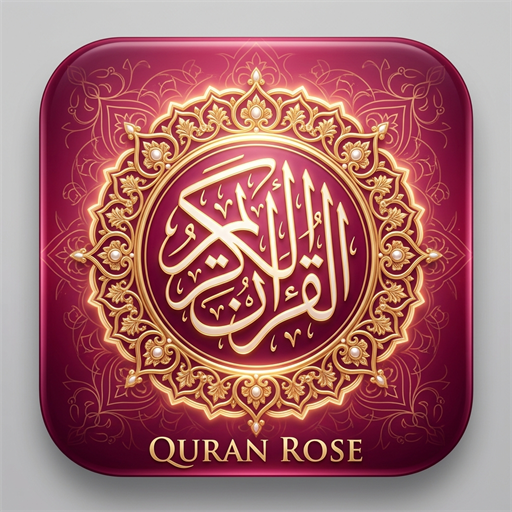
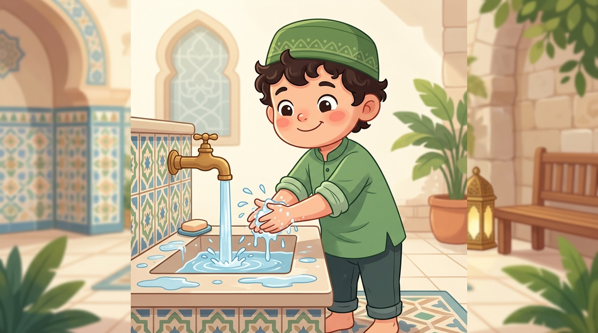

Al-Qur'an, Sholat & Asmaul Husna
Bahasa Indonesia
Aktifkan untuk mematikan audio terjemahan
Pengingat tilawah harian
Versi Wakaf Penuh (Unduh Satuan Gratis)
0 KB
100% Aman, tanpa pelacakan data pribadi
Murottal Quran v2.0 - Amal Jariyah
Bantu sebarkan aplikasi ini agar semakin banyak yang mendapat manfaat
3 Jumadil Awal 1448 H
Putar HP Anda secara perlahan hingga jarum sejajar tepat dengan ikon Ka'bah (🕋).
Pilih Tema Kompas:
Putar manual (simulasi jika di PC / tanpa sensor):
Sentuh untuk memutar audio merdu

📚 Pilih Ustaz